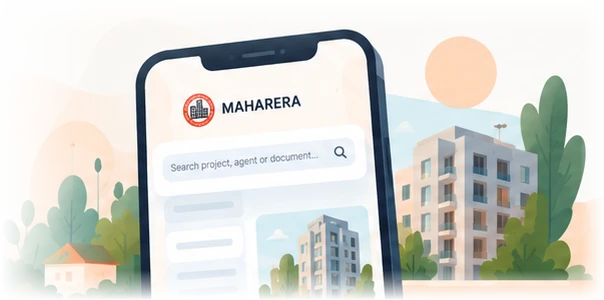
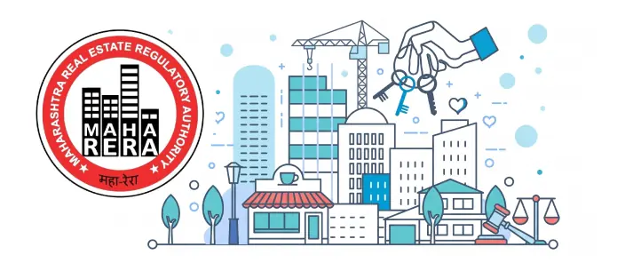

What I learned watching people use a government portal
Small moments of hesitation told us more than any analytics dashboard.
Read articleHi, I'm Ganesh.
I'm a UX designer. I find out where people get stuck, then design websites and services that are clear, quick and easy.
Read my storyI'm a UX designer from Mumbai, now based in London. For seven years I worked inside MahaRERA, Maharashtra's real estate regulator, first writing the policies, then designing the digital services that put those policies into people's hands.
I like problems with a lot of people on both sides of the counter: a homebuyer looking for answers, and an officer with a pile of applications to clear. Good design should make both of their days easier.
The longer version is below. It starts in a small town.
1 / 6 Jamner, Maharashtra, India
Planners draw routes before anyone travels them. Here's mine, drawn after the fact. Scroll, and follow it across the globe.
I was born in Jamner, a small town in Maharashtra. In a place that size you don't need a map; you learn the town by walking it. You notice which road floods first in the monsoon, where everyone queues, which office makes people wait the longest.
I didn't have a word for it then, but that habit of noticing how places work, and where they don't, became the thread through everything that followed.
I studied urban planning at COEP. Planning gave me a new way of seeing: a city isn't just buildings and roads, it's a system of rules, flows and people, and every line on a plan decides how someone's day will go.
That's a design problem. I just didn't know yet that I'd end up solving it on screens instead of on streets.
In 2017 I joined MahaRERA, the authority that regulates real estate across Maharashtra. As a technical advisor I framed and shaped policy. Most days meant deep data analysis: reading thousands of records to understand what was really happening in the market before we wrote a single rule.
Then came the project that changed my direction. Homebuyers had no clear way to report unregistered projects, so I was asked to help design a complaint module. I mapped the user flows, built the prototype and saw the final design through for two very different people: the citizen filing the complaint, and the authority officer who had to act on it.
Watching people use something I'd designed, and seeing where they hesitated, was the moment I realised policy only works if people can actually use it.
In 2022 I was promoted to UX Design Lead and given the job of redesigning how the whole authority met the public online. I also served as Secretary of the Design Committee, which meant making the case for design decisions in rooms full of lawyers, engineers and officials.
I led the end-to-end redesign of the MahaRERA website, then turned to the online application portal, the system behind almost every interaction a builder, agent or homebuyer has with the regulator.
The result I'm proudest of isn't a screen. An office that once ran on paper files, signatures and stamps became a paperless office. Applications that used to travel from desk to desk now moved through one shared system.
Leading a project at that scale left me with one clear feeling: this is the work I want to do for the rest of my career. I wanted the theory and research rigour behind the instincts I'd built on the job.
So in January 2025 I packed up, moved to London and started a Master's in User Experience Design at Kingston University. New city, new classmates, and a chance to test everything I thought I knew.
In 2026 I graduated with Merit. Officially, a UX designer, though in practice I'd been one since the day I watched a homebuyer struggle with a form I helped write.
I still think like a planner. I look at the whole system first, then design for the one person standing in it.
Notes on research, public services and design decisions.
Small moments of hesitation told us more than any analytics dashboard.
Read article
Why our survey changed how we thought about MahaRERA on phones.
Read articleTurning complaints, calls and data into clear design priorities.
Read articleSearch is easy when you know the project number. Most people don't.
Read article
What it takes to move a whole authority onto one shared system.
Read articleConcepts, visuals and side projects.
From colleagues, managers and classmates I've worked with.
During his seven years at MahaRERA, Ganesh drove key policy decisions and digital transformations, progressing to Assistant Manager and UX Designer. As secretary of the design committee, his user-centric approach and technical expertise significantly enhanced our digital platforms. Combining innovative problem-solving with strong leadership, Ganesh is an invaluable asset to any team.
Ganesh significantly improved the user experience of MahaRERA's digital platforms by simplifying complex workflows and making critical regulatory information accessible. His unique blend of analytical expertise and user-centered design was invaluable to our operational efficiency.
While working closely with Ganesh at MahaRERA, he showed an exceptional ability to turn complex regulatory workflows into clear, user-friendly digital journeys. The redesigned platform is a direct testament to his precision and dedication to digital transformation.
Collaborating with Ganesh during our university days was a fantastic experience. His expertise in graphic design and event planning single-handedly elevated the quality of every project we touched. He possesses a sharp eye for aesthetics and a natural instinct for creating memorable, user-centered designs.
Ganesh and I worked together during the MahaRERA digital redesign, and it was an amazing journey. He is a brilliant UX designer who is always looking for the best ways to improve the user experience and grow in his field. He is a natural design lead who keeps the team united and truly believes in the power of collaboration. Ganesh is incredibly passionate about his craft and never hesitates to step up and help his peers whenever they need it.
During our Town Planning programme, Ganesh Javhare was the go-to design expert whose sketching, visualization, and creative projects consistently stood out. He was equally reliable on the technical side, always stepping in to calmly and quickly resolve software or computer issues for everyone. With his rare blend of artistic talent and technical problem-solving skills, Ganesh is a highly resourceful addition to any team.
Next stop
I'm open to full-time roles, freelance projects and good conversations about public services and PropTech.